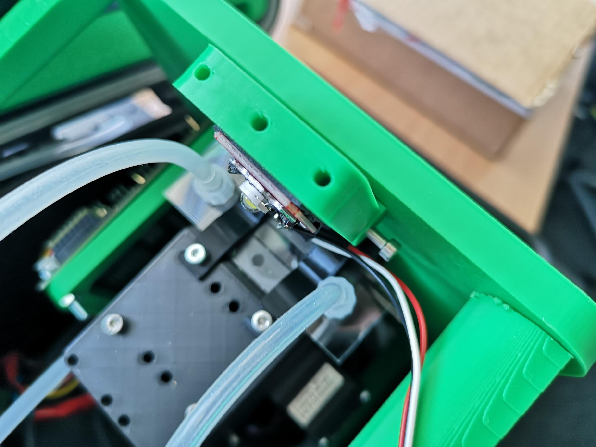
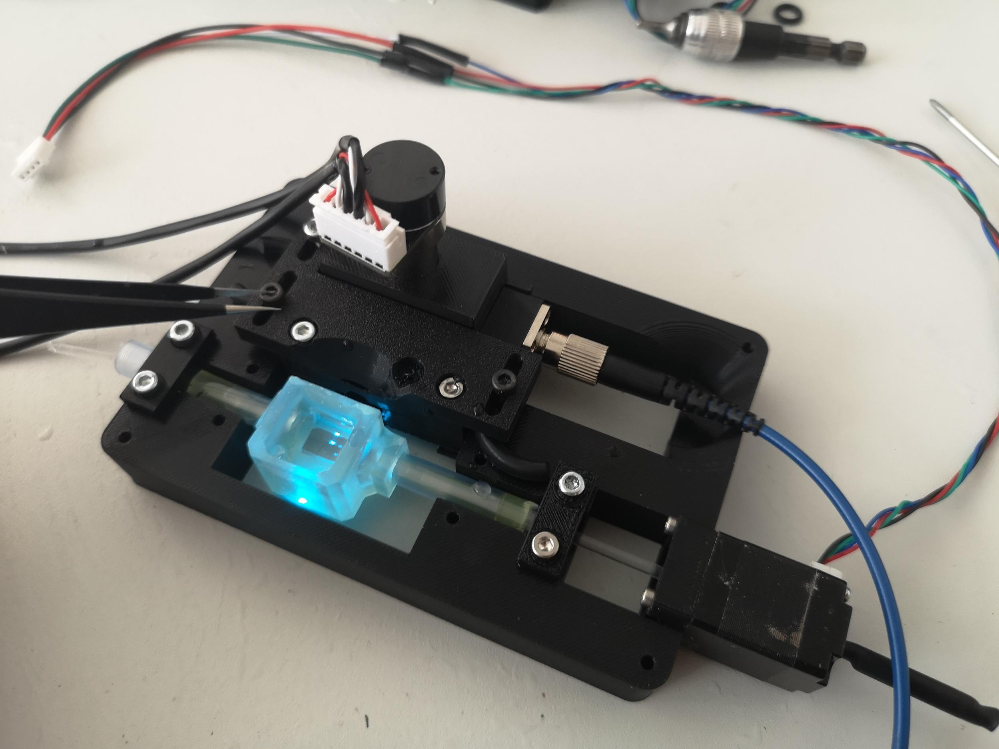
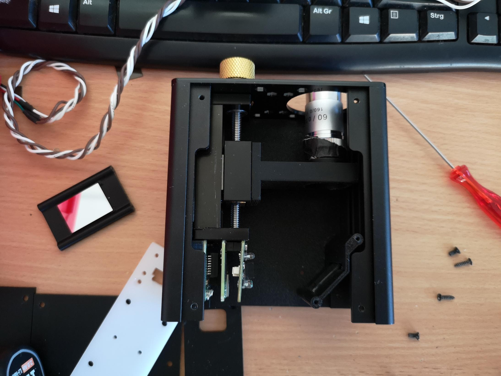
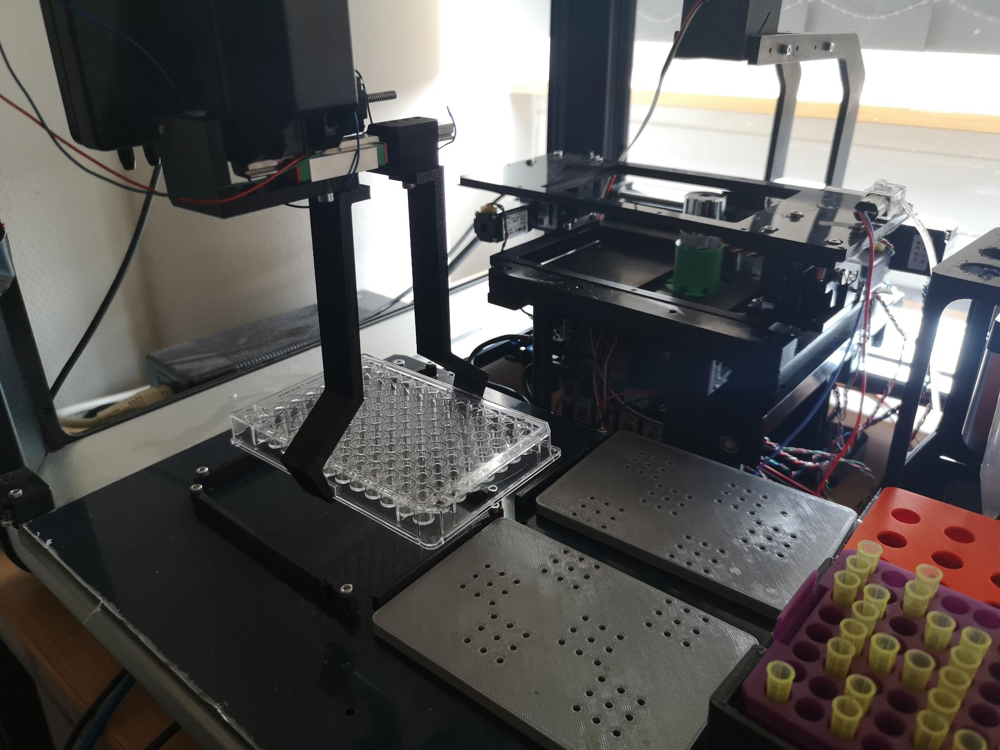
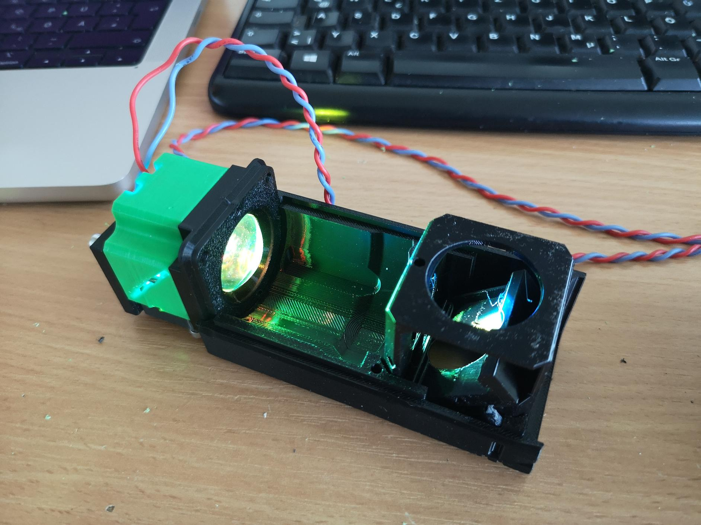

| Home | Program |
Join us for a week-long, hands-on journey into the world of modular, open-source microscopy. This workshop is designed to push the boundaries of traditional imaging by empowering participants to build and customize their own microscopes. With challenges in organoid sorting, bacteria staining, and advanced image processing, this course is perfect for those eager to innovate and create outside their comfort zone.
Discover how to design powerful imaging tools with 3D printing, microfluidics, and open hardware—all while connecting with experts and fellow makers from around the world. From technical workshops to creative design sessions, this event will help you turn ideas into instruments. Whether you're a biologist, engineer, or just curious about microscopy, Hack Your Microscope is the place to explore, learn, and contribute to the future of accessible imaging.
Ready to take on the challenge? Explore our program, and prepare to hack your microscope! PS: We are also very open for sponsorships, so if you are interested in supporting our event, please contact us.
Contact us at info@openuc2.com for more details or sponsorship inquiries. You can also follow our updates and sponsor announcements on social media or reach out for any assistance needed for planning your visit.
|  |  | |
|  |  |  |